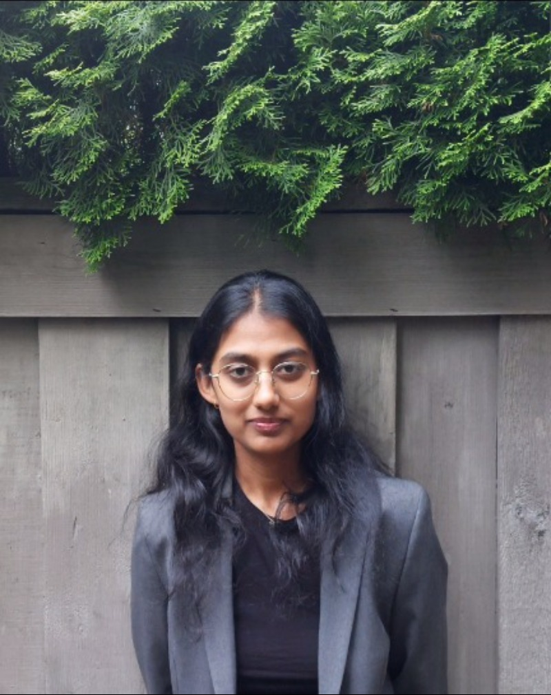
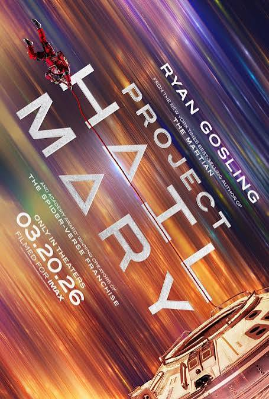
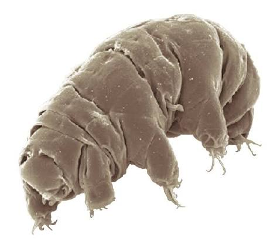
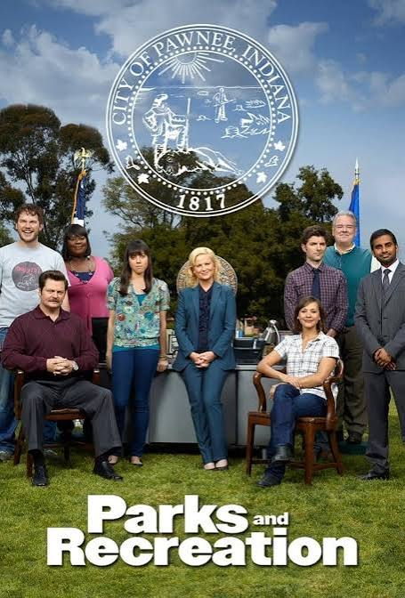

Hi there, fellow Earthling!

My name is Asmita Jain, and I am a Master's student in Genome Science and Technology at the University of British Columbia. I live in Vancouver, British Columbia, but I am originally from Bengaluru, India. In 2021, I packed my bags and moved 12.5 hours away from home (thankfully, we did away with switching the clocks) to pursue my bachelor's in Microbiology and Immunology, also at the University of British Columbia, and graduated in 2026.
At this point, you may have gathered that I like Science, although I am partial to studying microbes. I think microbes may be one of the coolest things that scientists have ever decided to study, along with outer space. They are tiny, sturdy creatures that have been around since before plants, sharks, and even oceans—basically, Earth as we know it today. Not only have they survived mass extinction events on Earth, they might also be the first aliens we will ever meet! Outside of loving microbes, I am also deeply fascinated by space and would love to visit—if they let me go.
When I'm not thinking about space and microbes or working with them, I find myself watching (and rewatching) a ton of sitcoms, going to the movies, listening to podcasts, and picking up hobbies that I lose interest in pretty soon. I also run sometimes, but I think you have to if you live in Vancouver. I enjoy reading, but I have more books that I'm currently halfway through than books that I have finished this year, so take that as you will.
Reading aside, if I had the apt for it, I would have loved to have been a comedy writer. My attempts so far have been quite unfruitful.
These are a few of my favourite things…


